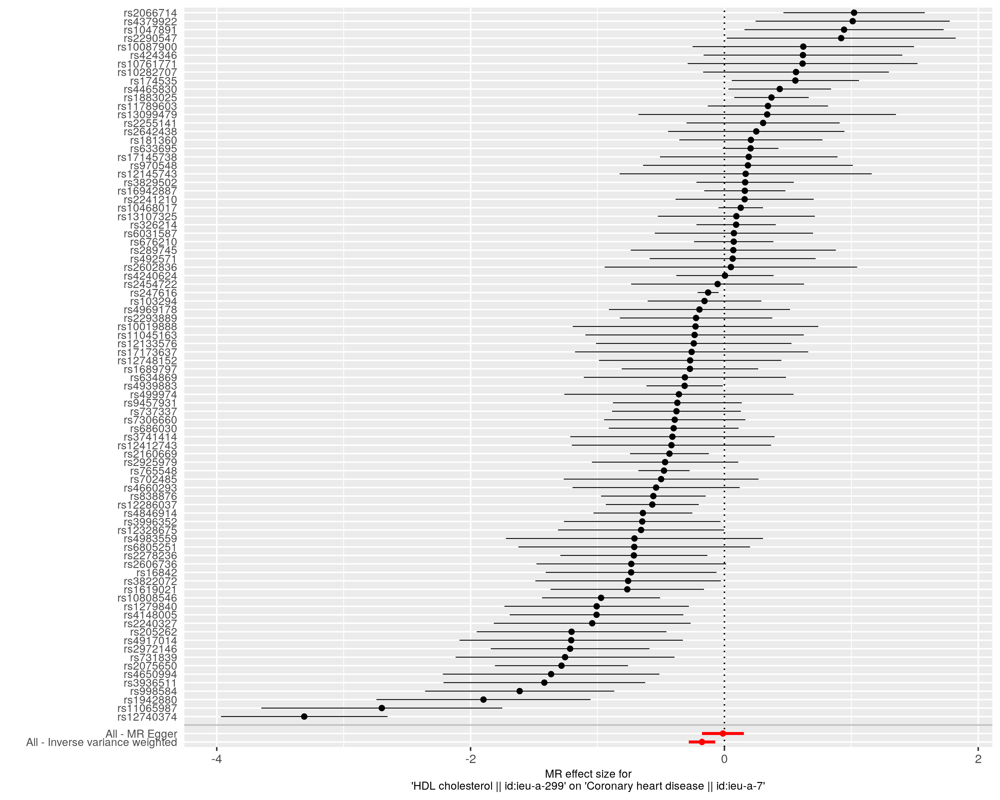
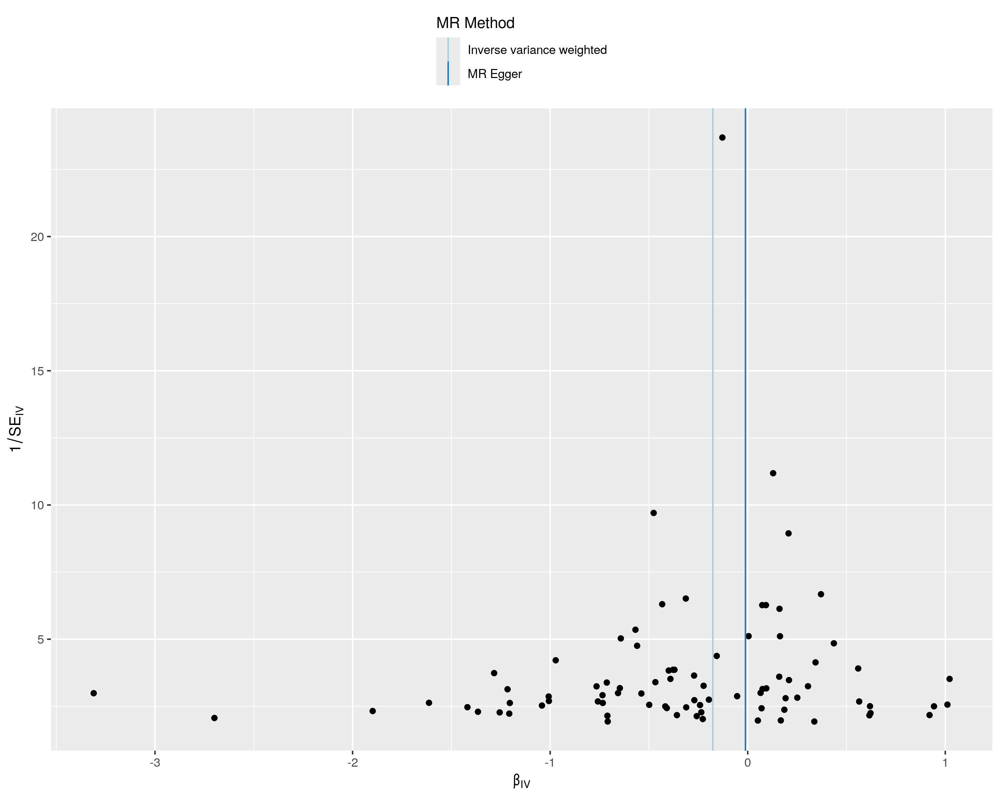
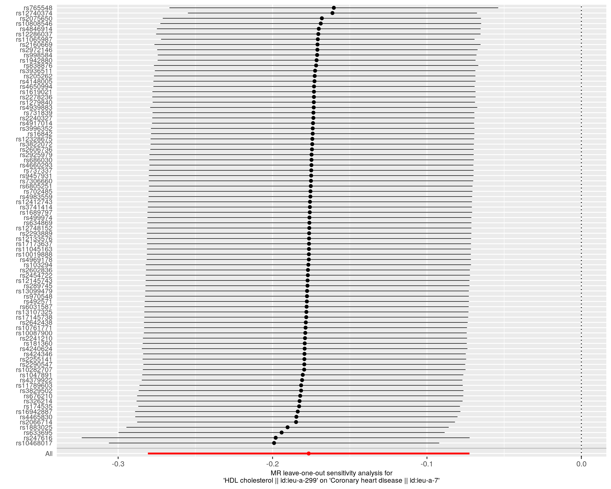

📍 散点图 (Scatter Plot)

展示SNP对HDL-C和CHD的效应。斜率代表因果效应估计值。
🌲 森林图 (Forest Plot)
展示每个SNP的因果效应估计及合并效应。
🎯 漏斗图 (Funnel Plot)
评估小样本偏倚和结果对称性。
📊 Leave-One-Out图
逐个排除SNP后评估结果的稳健性。
研究目的：探索高密度脂蛋白胆固醇（HDL-C）与心血管疾病（CHD）之间的因果关系
方法：两样本孟德尔随机化分析
数据来源：ieu-a-299 (HDL-C) → ieu-a-7 (CHD)
样本量：86个工具变量（SNPs）
结论：HDL-C水平升高对心血管疾病具有显著的保护作用 ✅
| 方法 | SNPs数 | OR | 95% CI | P值 | 显著性 |
|---|---|---|---|---|---|
| 逆方差加权法 (IVW) | 84 | 0.838 | 0.755 - 0.930 | 8.89×10⁻⁴ | 显著 |
| 加权中位数法 | 84 | 0.884 | 0.816 - 0.958 | 2.78×10⁻³ | 显著 |
| MR-Egger回归 | 84 | 0.988 | 0.838 - 1.166 | 0.891 | 不显著 |
| 加权众数法 | 84 | 0.915 | 0.257 - 3.263 | 0.892 | 不显著 |
主要发现：使用逆方差加权法（IVW），我们发现HDL-C每增加一个标准差，心血管疾病风险降低16.2%（OR=0.838）。
稳健性：加权中位数法也支持这一发现（OR=0.884, P=2.78×10⁻³），表明结果具有较好的稳健性。
多效性：MR-Egger截距检验显示存在一定的多效性（P=0.015），但IVW和加权中位数法的结果一致性支持因果推断的可靠性。
| 检验类型 | 统计量 | P值 | 解释 |
|---|---|---|---|
| 异质性检验 (IVW) | Q = 428.09 (df=83) | < 0.001 | 存在异质性 |
| 多效性检验 (Egger截距) | 截距 = -0.011 | 0.015 | 可能存在多效性 |
展示SNP对HDL-C和CHD的效应。斜率代表因果效应估计值。
展示每个SNP的因果效应估计及合并效应。
评估小样本偏倚和结果对称性。
逐个排除SNP后评估结果的稳健性。
本研究通过孟德尔随机化方法，为HDL-C与心血管疾病之间的因果关系提供了遗传学证据支持。结果表明，提高HDL-C水平可能是预防心血管疾病的潜在策略。
研究限制：尽管MR设计可以减少混杂因素影响，但结果仍需在更多人群和队列研究中验证。